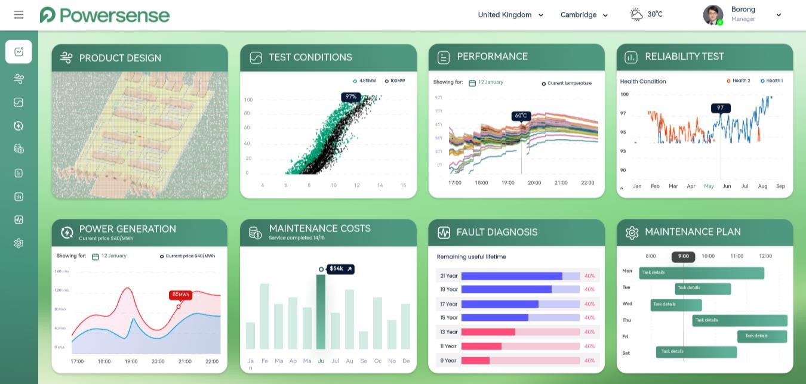

Alarms after the fault
Threshold-based alarms only fire once damage is done. No prediction, little reaction time, long downtimes — and sometimes catastrophic failures.
Intelligent O&M for renewable energy
PowerSense is an intelligent digital platform serving the whole life cycle of power electronics. Built on physics-informed machine learning, it monitors health, predicts faults and optimises maintenance across wind, grid, EV and storage infrastructure — using only the sensors you already have.
The problem
Renewables already supply 30% of global electricity, yet the equipment behind them is still maintained reactively. Sensors raise alarms only after a fault has happened, and every fix means sending engineers to remote sites.
Threshold-based alarms only fire once damage is done. No prediction, little reaction time, long downtimes — and sometimes catastrophic failures.
80–90% of O&M cost comes from corrective call-outs: engineers travelling to remote turbines and substations to diagnose problems by hand.
Offshore wind availability sits at just 95%. Untimely maintenance and undiagnosed faults cost the industry more than $15bn a year in lost production.
What we do
PowerSense combines AI with physics to evaluate the multi-physics performance and reliability of power electronics — efficiently and accurately — at every stage of the product life cycle.
Workflow-driven, multi-level design with an AI+physics engine and multi-objective optimisation — hundreds of times faster than conventional simulation.
How it works →Reliability testing in a virtual environment under realistic conditions — finding design defects early and cutting testing time by 90%.
How it works →Real-time health monitoring, fault prediction, remaining-lifetime estimation and dynamic maintenance planning — with no additional sensors.
See the platform →The platform
A cloud software platform that deploys seamlessly into the control desks operators already use. It fuses existing sensor data, analyses performance, diagnoses faults, predicts remaining lifetime and plans the optimal maintenance schedule.

Field-proven
In collaboration with our partner, Offshore Renewable Energy Catapult, our prototype — the world’s first fault-detection solution for electrical converters — was validated on a commercial offshore wind farm.
It detected three times more potential faults than the existing monitoring system and prevented one catastrophic failure.
Backed by
Partners & recognition
2nd Prize
Awarded at the University of Cambridge competition sponsored by Cambridge Enterprise and Cambridge Innovation Capital.
Named
Shortlisted among the next generation of Cambridge game-changers poised for future success.
Runner-up
Runner-up among startups from around the world at the global competition held in Bao’an, Shenzhen.